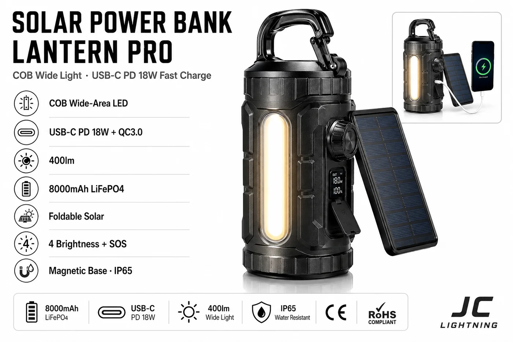

太阳能移动电源提灯 Pro
真正能快充的专业级提灯——COB 大面积光源(而非点状 LED)与真 USB-C PD 18W 充电,8000mAh 磷酸铁锂,四档亮度加 SOS。

系列里的高端提灯,正面对标众多在充电上令人失望的提灯。两点让它与众不同:COB 大面积光源提供均匀、不刺眼的输出,以及真正的 USB-C PD 18W(外加 QC3.0)快充——因此 8000mAh 磷酸铁锂电池真的能快速回满,而非 5V 涓流对手那样。四档亮度、SOS、磁吸底座、可折叠太阳能和 IP65,共同成就一款认真的离网工具。
规格参数
| 光源 | COB 大面积 |
|---|---|
| 快充 | USB-C PD 18W + QC3.0 |
| 光通量 | 400 lm |
| 电池 | 8000mAh 磷酸铁锂 |
| 光伏板 | 可折叠 |
| 模式 | 4 档亮度 + SOS |
| 安装方式 | 磁吸底座 |
| IP 防护等级 | IP65 |
| 认证 | CE + RoHS |
为什么选它
充电该有的样子。USB-C PD 18W 与 QC3.0 带来快速回满——买家相比便宜提灯能立刻感知的卖点。
COB,而非点状 LED。更大面积上均匀、不刺眼的光。
高端定位。更高毛利的旗舰 SKU,稳住便携系列。为什么磷酸铁锂更好 →
已认证、支持 OEM。每份报价附 CE + RoHS;可定制品牌。
为这些市场而建全球户外、应急储备与高端礼品零售——以及需要"真能充上电"的离网客户。